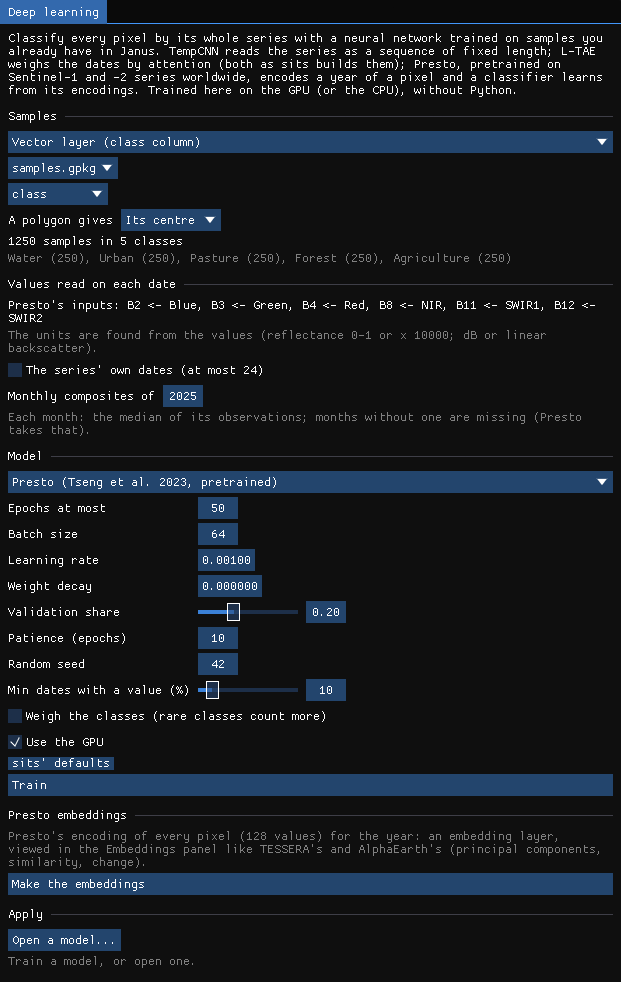
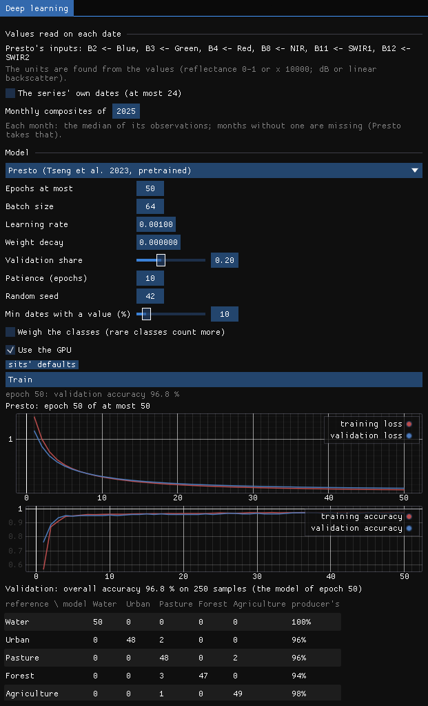
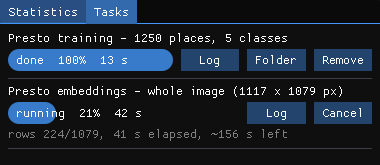
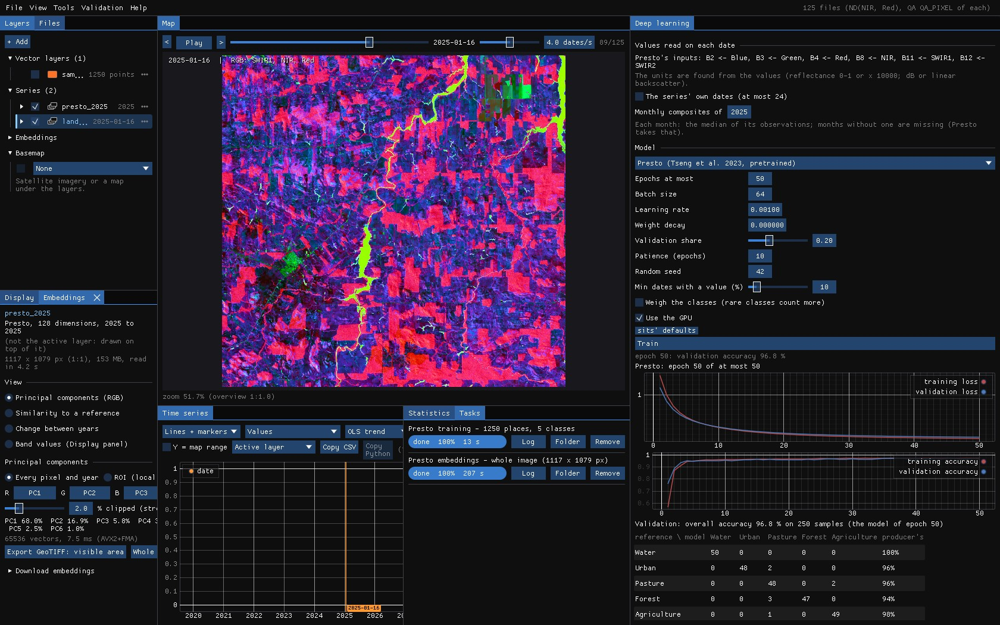
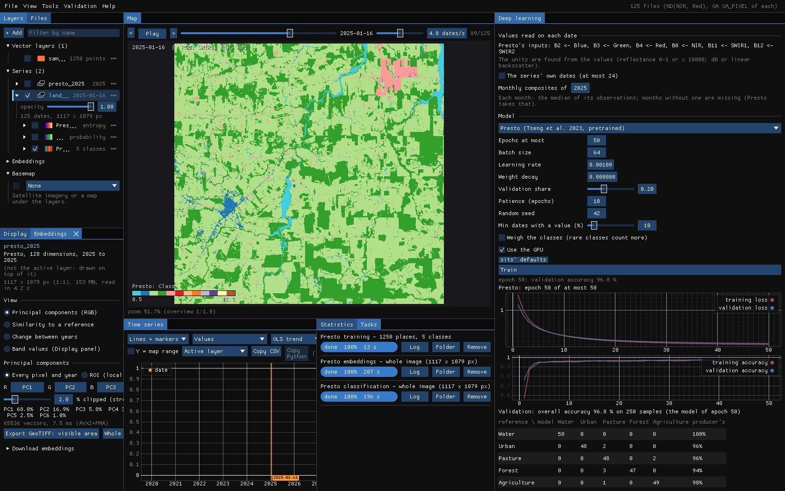

01The idea
Presto (Tseng et al. 2023) is a small transformer pretrained, by masking parts of the series and learning to fill them back, on monthly series of single pixels: Sentinel-1, Sentinel-2, ERA5 weather, SRTM elevation and Dynamic World, any of which may be missing. Its encoder makes a token of each group of bands of each month, one of the elevation and one of the place, and averages them into an encoding of 128 values.
Two uses in Janus, both on the GPU and without Python:
- Embeddings
- The encoding of every pixel for a year, written as a 128-band GeoTIFF and opened as an embedding layer, viewed as TESSERA's and AlphaEarth's are (principal components, similarity to a place, change between years).
- Classifier
- The encoder kept as pretrained and a linear layer on its encodings, trained on your samples: few weights to learn, so few samples are needed.
The weights are the authors' (nasaharvest/presto, MIT): 3.3 MB, downloaded once and checked by their SHA-256. Janus' encoder gives the encodings of Zeit's port of Presto to within 4.4 × 10⁻⁶.
02The example
The data of the deep learning guide: the Landsat 8/9 series of Rondônia (125 dates, 2020–2026, 30 m) and 1250 samples of MapBiomas 2022 in five classes.
03Presto's inputs
In Tools → Classify with deep learning, choose Presto. Its inputs are found among the series' bands by name (Sentinel-2's B2…B12, Sentinel-1's VV and VH, ERA5's and SRTM's names) and by role: here blue, green, red, NIR, SWIR1 and SWIR2 become B2, B3, B4, B8, B11 and B12. The units are found from the values (reflectance 0–1 or × 10000; backscatter in dB or linear), the latitude and longitude of each pixel from the series' CRS.


Presto reads a year month by month: Janus makes the monthly composites of the year chosen (each month the median of its observations; a month without one is missing, as Presto expects), or takes the series' own dates when it has 24 or fewer.
04The classifier
Train: the encodings of the 1250 samples are made once, then the linear layer learns on them. 50 epochs in 13 seconds, to an overall accuracy of 96.8% on the 250 validation samples, from one year (2025) of the series where TempCNN read all six years.


Three forest samples were taken for pasture, two pasture samples for agriculture and two urban for pasture. A small head on a frozen encoder will not beat a network trained end to end on many samples (TempCNN, 98.4% here), but it needs far fewer samples to learn, and a year of data.
05The embeddings
Make the embeddings encodes every pixel: 1.2 million in 207 seconds, written as presto_2025.tif (128 bands, tagged as Presto's) and opened as an embedding layer.



Nothing was said to Presto about these classes, yet the components already part forest, pasture, rivers and fields: the encodings carry what the year of each pixel was like. The first component alone holds 68% of the variance, the first three 91%. From the Embeddings panel, Similarity to a reference shows the places like a pin or the ROI, and with embeddings of two years, Change between years maps where a place stopped being like itself.
06The class map
Apply on the whole image: the classifier on every pixel's encoding, 195 seconds; the class, its probability and its uncertainty as layers, as with the other networks.


07What next
- Sentinel-1 and -2: with VV, VH and the red-edge bands, Presto gets the inputs it was pretrained on.
- Few samples: label a few dozen pins (Pins (a class each)) and train the classifier on them.
- Compare models: TempCNN, L-TAE and U-TAE on the same samples, and the maps validated with a sample of their own (Validation guide).
08References
- Tseng, G., Cartuyvels, R., Zvonkov, I., Purohit, M., Rolnick, D., Kerner, H. (2023). Lightweight, pre-trained transformers for remote sensing timeseries. arXiv:2304.14065. (nasaharvest/presto)
- Souza, C. M., et al. (2020). Reconstructing three decades of land use and land cover changes in Brazilian biomes with Landsat archive and Earth Engine. Remote Sensing, 12(17), 2735. (MapBiomas)
- Zeit:
zeit.ai.presto, the port the encoder is checked against.